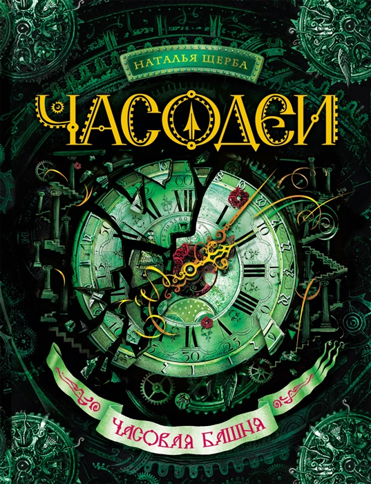

Книга "Часодеи: Часовая башня"

Все ключники должны попасть во Временной Разрыв и найти Расколотый Замок. Василиса готова сделать все, чтобы доказать умение управлять временем. Но Елена Мортинова обязательно встанет на ее пути. Сможет ли девочка противостоять влиятельной подруге отца? А ведь еще Василисе нужно успеть спасти фею Диану, поступить в часовую школу и... найти ключ к сердцу самого близкого человека.